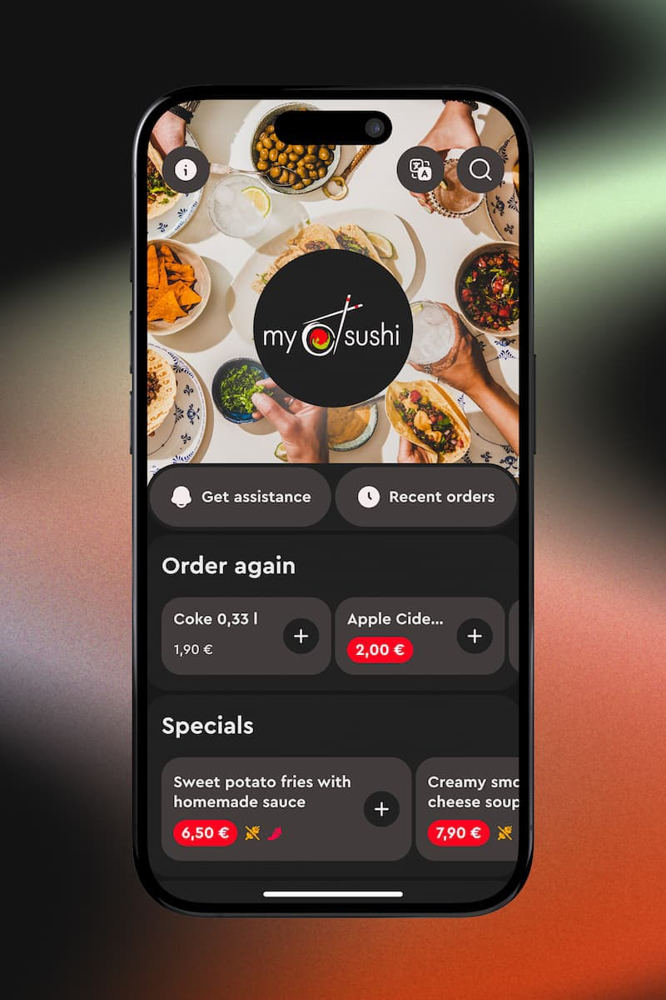
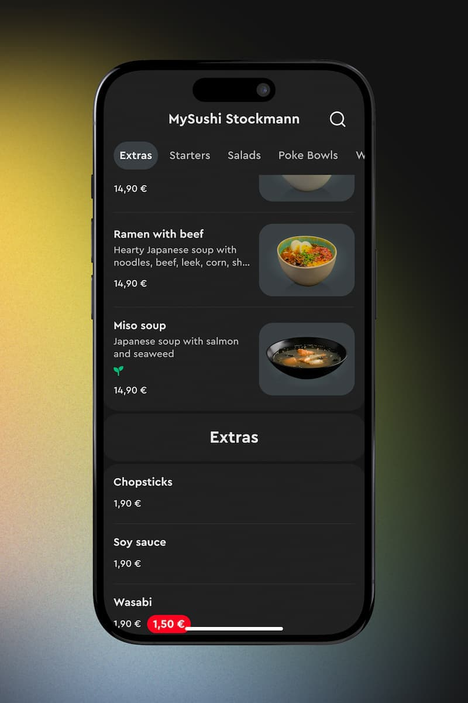
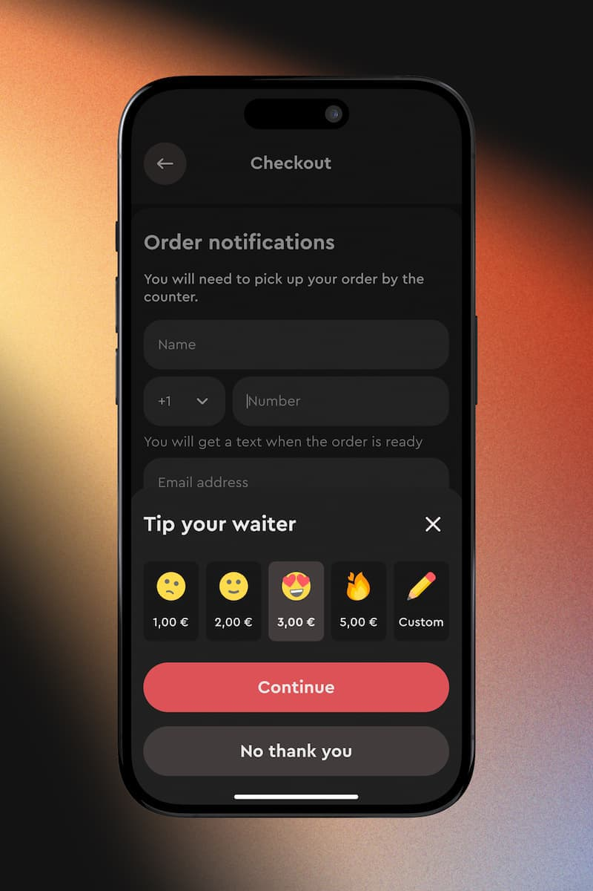
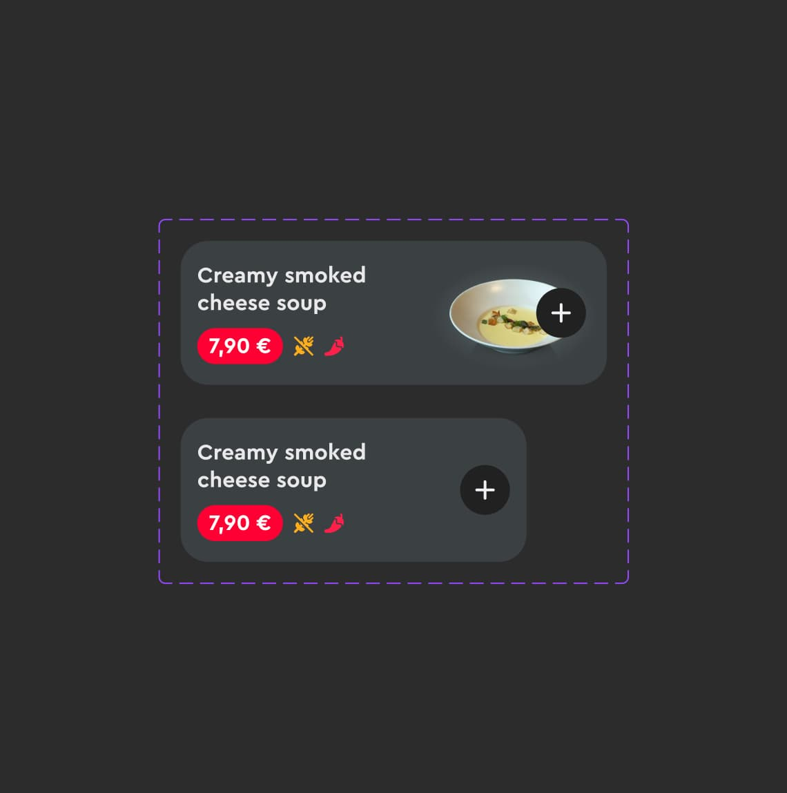
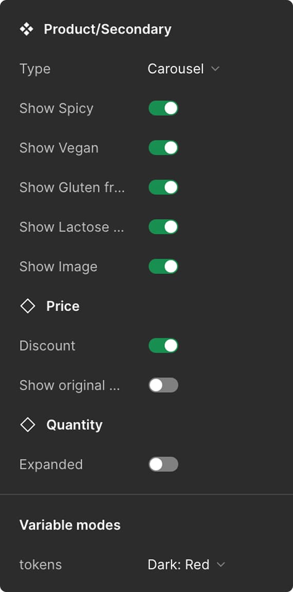
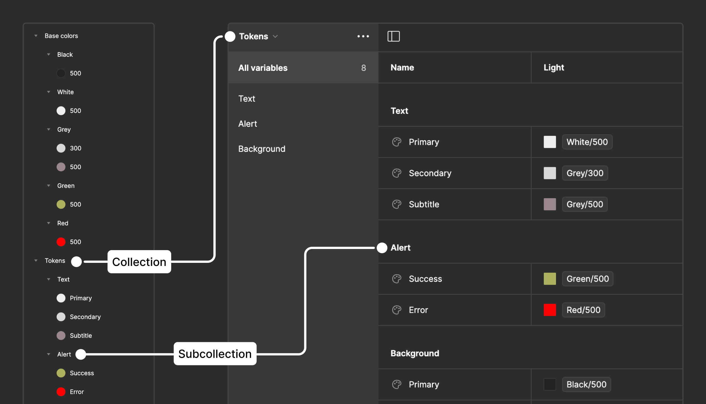
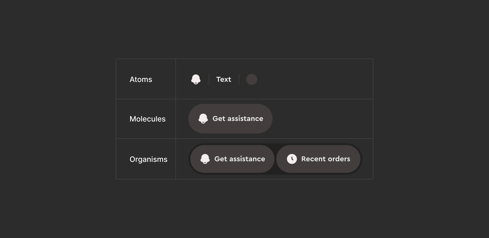
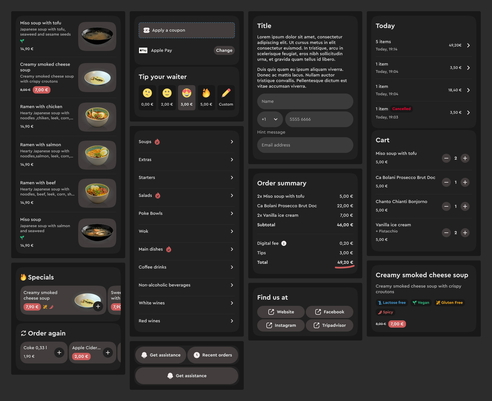
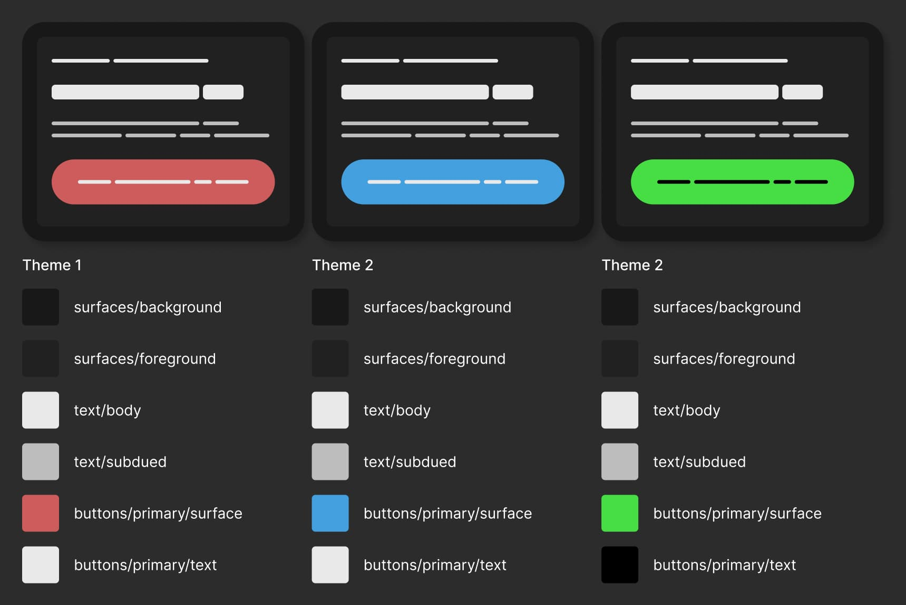

Order & Pay product snapshots


Before: component inconsistency and complexity

Migration to token-driven foundations


Atomic and modular component architecture

Theming and white-label readiness